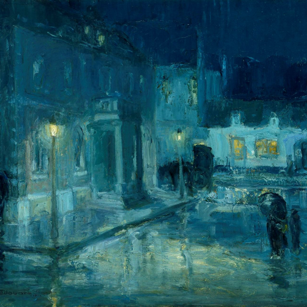
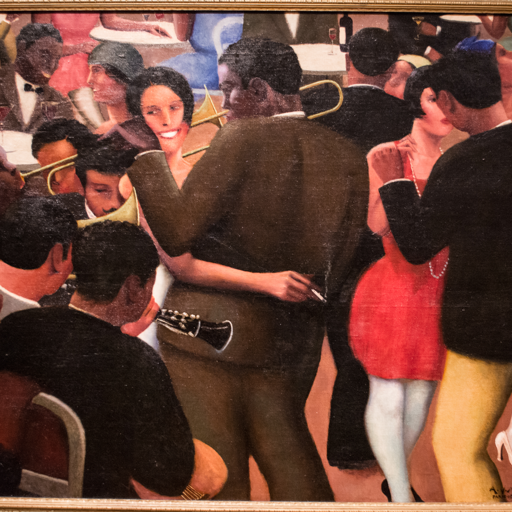
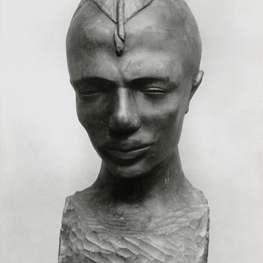
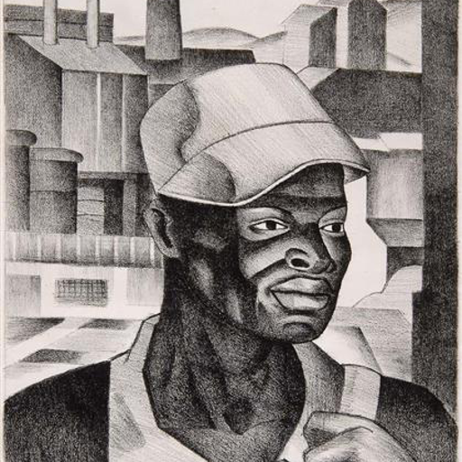
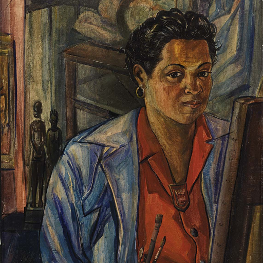
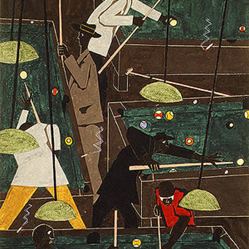
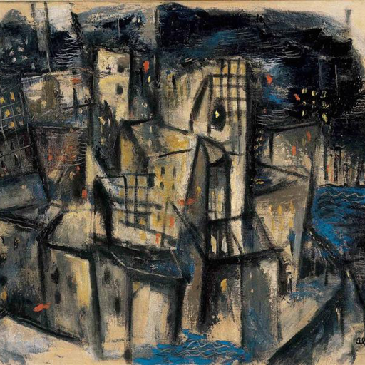
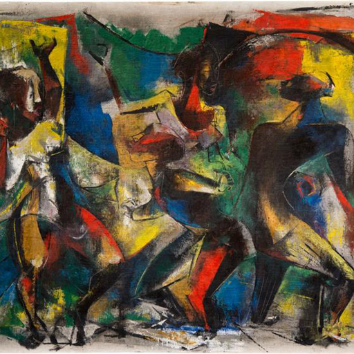
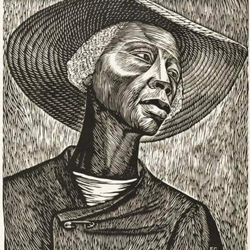

Forgotten sociology.
| link | cite |
|---|---|
|  | William Edouard Scott, Rainy Night at Etaples, 1912 |
| Henry Ossawa Tanner, War Scene, 1914 | |
| William Edouard Scott, Hallie’s Red, 1920 | |
 |
Henry Ossawa Tanner, Flight Into Egypt, 1922 |
| Archibald Motley, Cocktails, 1926 | |
 |
James Lesesne Wells, Looking Upward, 1928 |
|  | Archibald Motley, Blues, 1929 |
 |
Augusta Savage, Garmin, 1929 |
 |
Allan Randall Freelon, Gloucester Harbor, 1929 |
| James Lesesne Wells, Builders, 1929 | |
|  | Nancy Elizabeth Prophet, Congolaise, 1931 |
 |
James Lesesne Wells, Barry Place, 1932 |
| Lois Mailou Jones, Ascent of Ethiopia, 1932 | |
| Norman Lewis, The Wanderer, 1933 | |
 |
Aaron Douglas, Negro in African Setting, 1934 |
 |
Archibald Motley, Black Belt, 1934 |
| Meta Vaux Warrick Fuller, Sorrow, 1934 | |
 |
Charles Clarence Dawson, poster, 1934 |
|  | James Lesesne Wells, The Negro Worker, 1938 |
 |
Aaron Douglas, The Judgement Day, 1939 |
|  | Lois Mailou Jones, Self Portrait, 1940 |
 |
William H. Johnson, Church on Lennox Avenue, 1940 |
| Horace Pippin, The Wash, 1940 | |
| Jacob Lawrence, Harriet Tubman Series, 1940 | |
| Jacob Lawrence, The Migration of the Negro Panel 1, 1941 | |
 |
William H. Johnson, Harlem Street, 1941 |
| Norman Lewis, Meeting Place, 1941 | |
 |
William H. Johnson, Going to Church, 1941 |
| Augusta Savage, Portrait of a Baby, 1942 | |
 |
Jacob Lawrence, The Photographer, 1942 |
|  | Jacob Lawrence, Pool Parlor, 1942 |
 |
Charles Alston, A Step in the Right Direction, 1943 |
 |
Horace Pippin, Domino Players, 1943 |
| Norman Lewis, Untitled, 1943 | |
 |
Lois Mailou Jones, Jennie, 1943 |
 |
Lois Mailou Jones, Mob Victim Meditation, 1944 |
 |
Aaron Douglas, Building more Stately Mansions, 1944 |
|  | Charles Alston, New York Cityscape, 1948 |
 |
Walter Sanford, Study in Black and White, 1949 |
|  | Charles Alston, Dancers, 1949 |
 |
Allan Randall Freelon, The New Negro, 1949 |
 |
Walter Sanford, Tabu, 1951 |
|  | Elizabeth Catlett, Sharecropper, 1952 |
| Allan Randall Freelon, Factory, N.D. |